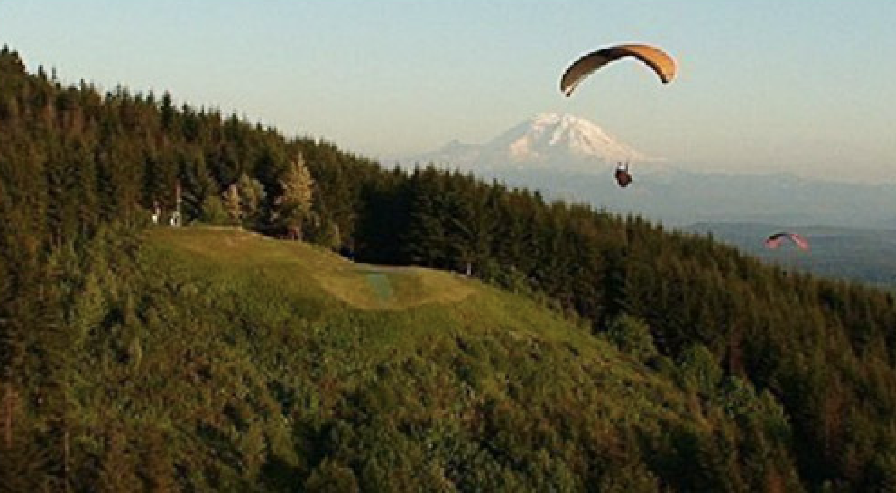
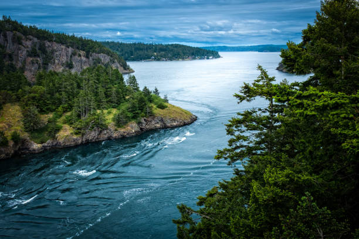

Explore Washington State's Great Outdoors
From expansive mountain ranges, lush forests, and vast waters, Washington state
has so much to offer. This area is one of the most beautiful in the country, and
is fantastic for outdoor experiences. Pacific Northwest Activities offers multiple
different outdoor options for all types of people, some for those wanting calm
relaxation, and some for those who want daring adventure. No matter what, your
time will be beautiful and scenic in this great area.
Paraglide off Beautiful Tiger Mountain

Go on a paragliding adventure at Tiger Mountain, a beautiful small mountain
right outside of Seattle. See views of Lake Sammamish, Mt. Ranier, and more.
Rides are tandem with a professional instructor so no need to worry about safety,
Tiger Mountain Paragliding company has got you covered. The mountain itself
is also a great hiking spot, just a short walk up and you’ll see some great views.
Click Here to book your paragliding session today!
Pricing and Add-On Packages
| Package/Add On |
Description |
Price |
| Tandem Flights |
These are one to one you and an instructor, they are there to help you every step of the way. This ride is beautiful and fully beginner frendly. |
$265 |
| Bus ride Up |
If you are not the hiking type and do not wish to walk up yourself, this easy bus ride up is a great add on to your paragliding experience. |
$20 |
| Go Pro Video |
Want to rember this experience forever, get this add on go pro video recorded by your personal instructor! |
$50 |
Kayak Through Whidbey Island Waters

Experience the beauty of the Puget Sound close up on a private small group
kayak tour around the waters of Whidbey Island. Beginner friendly tours will
teach you how to paddle and kayak then take you through the calm Pacific
Northwest waters. You will see views of the Cascade Mountains and Camano
Island coasts. Seals, seaweed, eagles, and more will be all around and give
you a true introduction to Washington wildlife.
Click here to schedule a peaceful tour of the puget sound!
Pricing and Add-On Packages
| Package/Add On |
Description |
Price |
| Langley Marina Group Kayak Tour |
This is the perfect short 2.5 hour tour for those new to kayaking, and is a great way to be intoduced to the Pacific Northwest area. |
$67 |
| Private Langley Marina Kayak Tour |
This tour has a similar experience as the Langley Marina Group Kayak Tour, but is meant for small intimate groups who want private time with an instructor. |
$300 |
| Saratoga Passage Group Half Day Kayak Adventure |
This kayak advanture lasts a half day long, and has beautiful Whidbey
island views like many other tours offered, but this one has the possibility
of letting you see some puget sound grey whales close up! |
$115 |